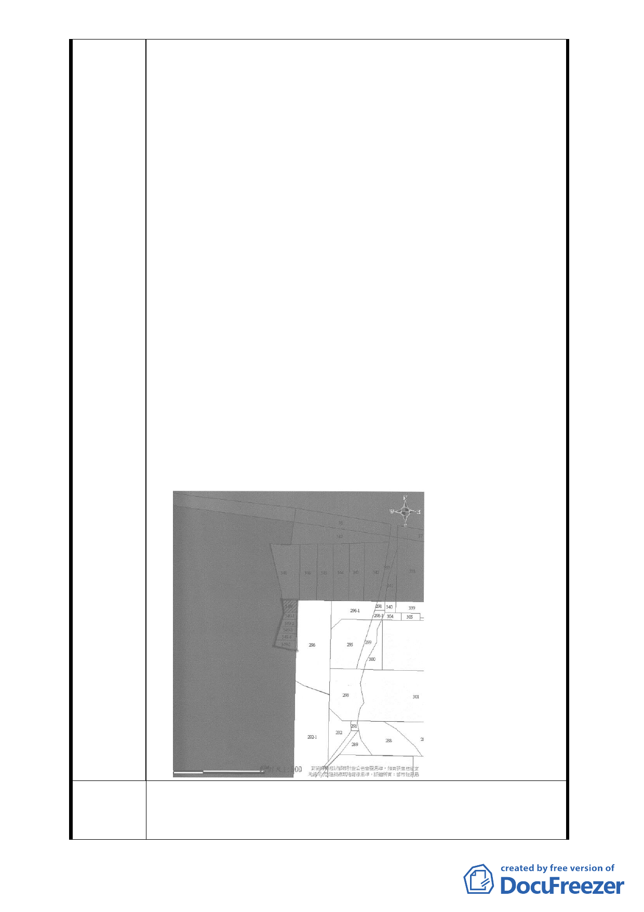

陳情理由
1. 陳情人等所有座落於台北市信義區逸仙段二小段 349、
349-1、349-2、349-3、349-4、349-5 地號等 6 筆土地，與同
段 353 地號土地相鄰，且為建築法規上所稱之畸零地，無法
建築使用，向臺北市政府工務局申請合併鄰地達於准予建築
之部分土地，以便進行建造執照之申請，為臺北市政府工務
局於民國 92 年 6 月 16 日北市工二字第 09231532300 號函裁
示：「因所要求合併之土地，位於臺北市政府公告公開展覽
擬訂『台北文化體育專用區』細部計畫範圍內，不予核發證
明」。
2. 陳情人於民國 92 年 7 月 10 日陳情協調『台北文化體育專用
區』主管機關徵收陳情人等所有位於臺北市逸仙段二小段
349、349-1、349-2、349-3、349-4、349-5 地號土地，或變
更 臺 北 市 政 府 工 務 局 92 年 6 月 16 日 北 市 工 二 字 第
09231532300 號函不予核發證明之裁示，避免因都市計畫不
夠週全造成陳情人土地無法有效使用，嚴重損害所有權人之
權益，均未獲回覆」。
3. 貴市府於民國 98 年 10 月 29 日府都規字第 098368431000 號
公開展覽「變更臺北市文化體育園區北側第三種工業區為道
路用地細部計畫案」，經查該計畫道路行經陳情人等所有之
土地側面，該規劃設計完全忽視並嚴重損害週邊市民私有土
地所有權人土地有效利用之權益，形成陳情人永久無法建築
使用，卻要每年繳納巨額地價稅之受害人，所受損害甚巨，
嚴重影響市容觀瞻。
懇請徵收陳情人等所有坐落於臺北市逸仙段二小段349、
建議辦法 349-1、349-2、349-3、349-4、349-5地號等6筆土地，劃入「臺
北文化體育專用區」計畫地區範圍內，納入細部計畫範圍協議
- 19 -